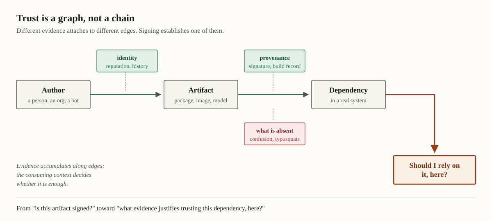

How can software reuse remain trustworthy at ecosystem scale?
Modern software systems depend on components produced by people and organizations their developers may never meet. Package registries and build systems make that reuse inexpensive, but they also leave developers to decide which producers and artifacts to trust.
We study the evidence available for those decisions. Some of our work examines identity, software signing, and provenance; other work studies whether developers can use those mechanisms effectively, how they assess dependencies, and how attackers exploit gaps in the distribution process.
Research
Signing can establish who vouched for an artifact. A valid signature does not tell a developer whether that producer is trustworthy, or whether the dependency is appropriate in a particular system. We therefore study both the mechanisms that carry evidence and the decisions developers make from it.
On the mechanism side, we have measured signing across public package registries and examined what identity-based signing establishes in practice. On the decision side, we have interviewed practitioners about why signing is or is not adopted, studied how developers choose dependencies, and shown how naming and metadata become an attack surface when an ecosystem assumes that a familiar package name identifies a familiar producer.

Evidence attaches to different edges: identity to the producer, provenance and signatures to the artifact, policy to the consuming system. Signing establishes one edge; whether the accumulated evidence suffices is decided in context.
Applications
The same questions recur wherever software is assembled from artifacts produced elsewhere, and the newer ecosystems inherit the problem before they inherit the defences.
Pre-trained models are distributed through registries much like packages, and a model file can execute code when it is loaded. Research software has supply chains of its own, with different incentives and less tooling. Agent ecosystems are beginning to distribute executable capability in the same way.
Proceedings of the 32nd ACM Conference on Computer and Communications Security (CCS)
A model file that executes code when loaded is an attack surface, and model repositories distribute those files the way registries distribute packages.
Proceedings of the 45th IEEE Symposium on Security and Privacy (S&P)
Measured signing across four public registries. Established how rare and how poor-quality signing actually was, against which later adoption work reads.